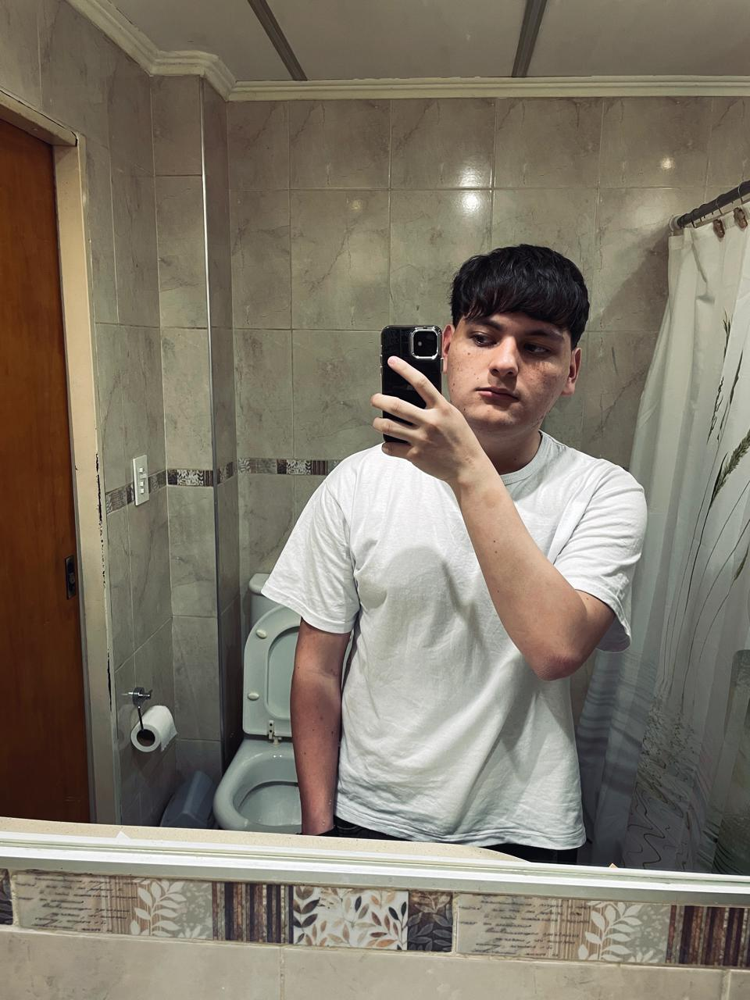
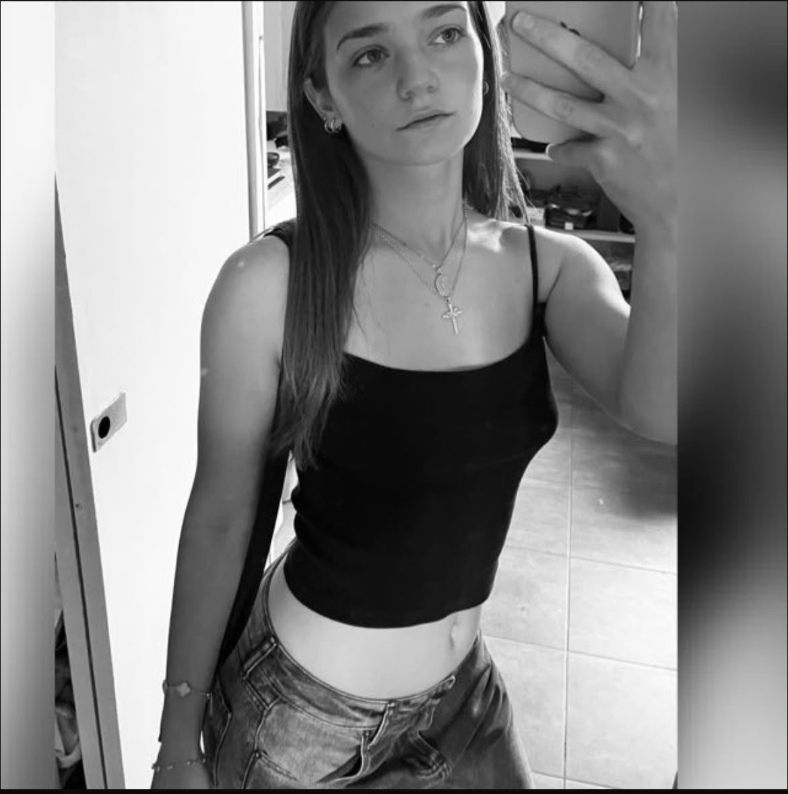
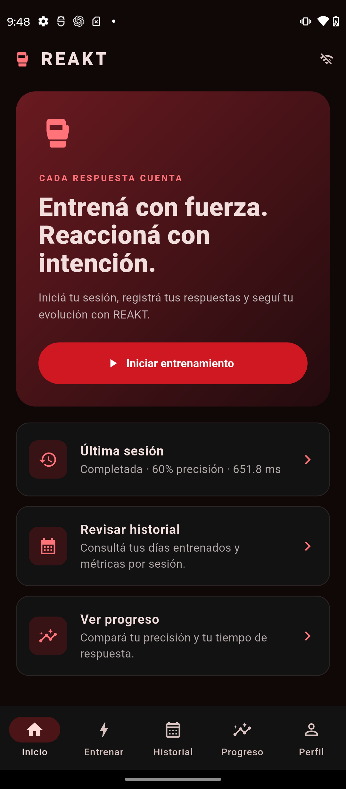
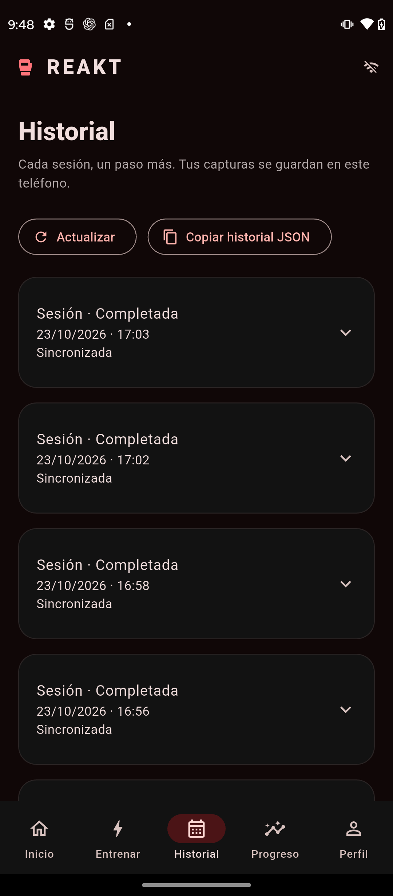
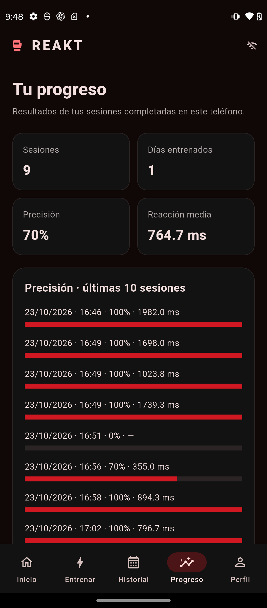
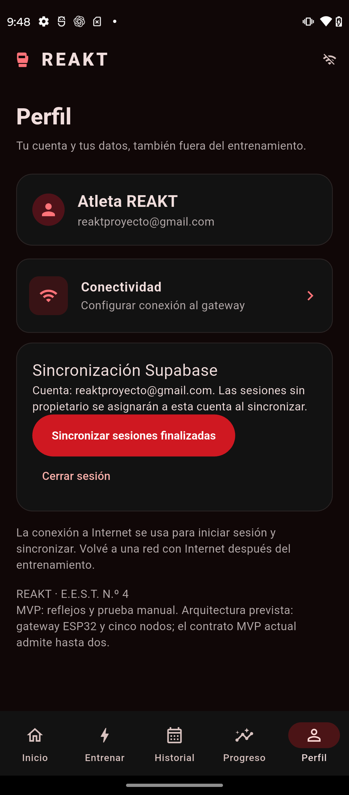

PROPUESTA
Una red física que convierte acción en datos.
Los módulos generan estímulos y detectan pulsaciones. El gateway coordina los eventos y la aplicación organiza cada sesión para poder compararla.
Entrenamiento físico que responde a cada movimiento. Cinco módulos, un gateway y una aplicación pensados para convertir estímulos y pulsaciones en información útil.
Hardware y transporte app↔gateway aún contienen decisiones TBD.
01 · El proyecto
REAKT busca volver observable un entrenamiento que suele depender de la percepción: registrar respuestas, procesarlas y convertirlas en una lectura clara del rendimiento.
Los módulos generan estímulos y detectan pulsaciones. El gateway coordina los eventos y la aplicación organiza cada sesión para poder compararla.
Sin un sistema común, tiempos, aciertos, errores y evolución quedan sujetos a una evaluación difícil de comparar.
La arquitectura busca sumar modos, métricas y módulos manteniendo un protocolo compartido.
02 · Arquitectura
Cada capa tiene una responsabilidad clara: adquirir, iluminar, comunicar, procesar, persistir y presentar.
ESP32 + pulsador mecánico NA + LED WS2812B
Comunicación inalámbrica entre nodos y gateway
ESP32 central para coordinar eventos y comunicación externa
Supabase / PostgreSQL para usuarios, sesiones y métricas
Flutter para configuración, control y visualización
03 · Entrenamientos
Elegí un modo para ver qué busca registrar. Todos comparten una estructura de datos común.
04 · Desarrollo
El recorrido separa las decisiones de arquitectura, las pruebas del hardware y la integración del sistema completo.
Definición del sistema, modos, flujo de datos, interfaz y stack tecnológico.
Prototipo de nodo con pulsador NA y WS2812B. Placa, GPIO y alimentación continúan TBD.
Validación de ESP-NOW entre gateway y nodos, incluyendo pérdidas, duplicados y timeouts.
Flutter para configurar entrenamientos, visualizar resultados, historial y estadísticas.
Persistencia autorizada en Supabase/PostgreSQL e integración entre las capas.
Pruebas, documentación, presentación y demostración del sistema.
05 · Aplicación
La aplicación prevista organiza la actividad para que cada sesión tenga contexto y pueda compararse con las anteriores.
Última sesión, métricas principales, racha y acceso al entrenamiento.
Calendario y detalle de las sesiones realizadas.
Evolución de reacción, precisión, velocidad y resistencia.
Mejores resultados personales y logros vinculados a condiciones de entrenamiento.
06 · Integración curricular
Los estados reflejan decisiones del proyecto, no resultados de pruebas todavía no realizadas.
07 · Equipo
Las personas detrás de REAKT.

Equipo REAKT - SOFTWARE - FIRMWARE
Equipo REAKT - rol por definir
Equipo REAKT - HARDWARE - INVESTIGACIÓN

Equipo REAKT - SOFTWARE - UX/UI
08 · Evidencia
Capturas de la aplicación y espacio para documentar el prototipo físico.
Cuatro pantallas de REAKT. Seleccioná una captura para verla en tamaño completo.




Este espacio se reemplazará con una fotografía validada del sistema físico.
Conocé cómo construimos REAKT: aplicación, firmware y documentación en nuestro repositorio público.
09 · REAKT para Android
Configurá tu entrenamiento, revisá tus sesiones y seguí tu progreso. Descargá la última versión publicada por el equipo.
Buscando la última versión disponible…
Versión de demostración distribuida desde GitHub. Si ya usás REAKT, exportá tu historial antes de reemplazar la instalación.